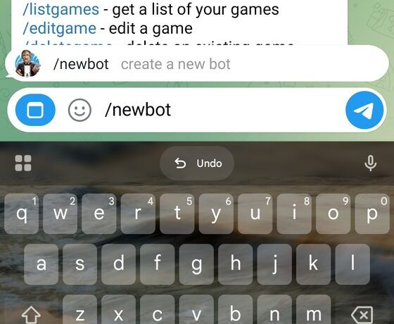
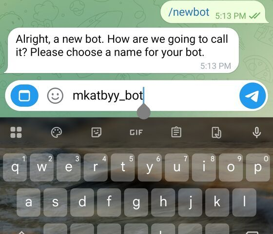
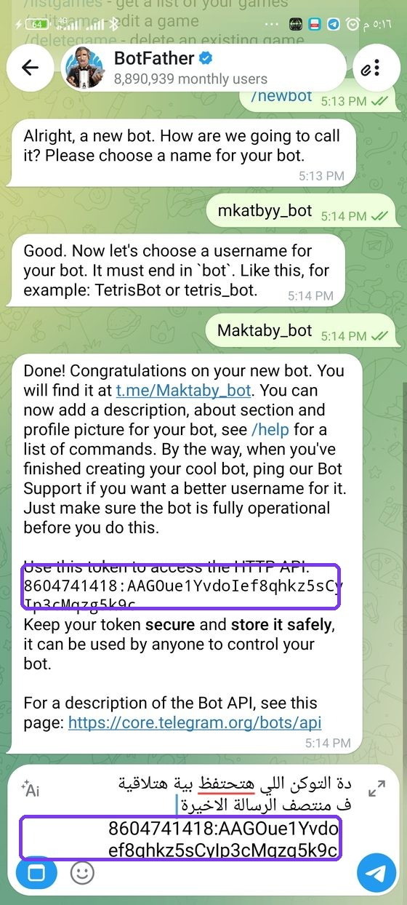
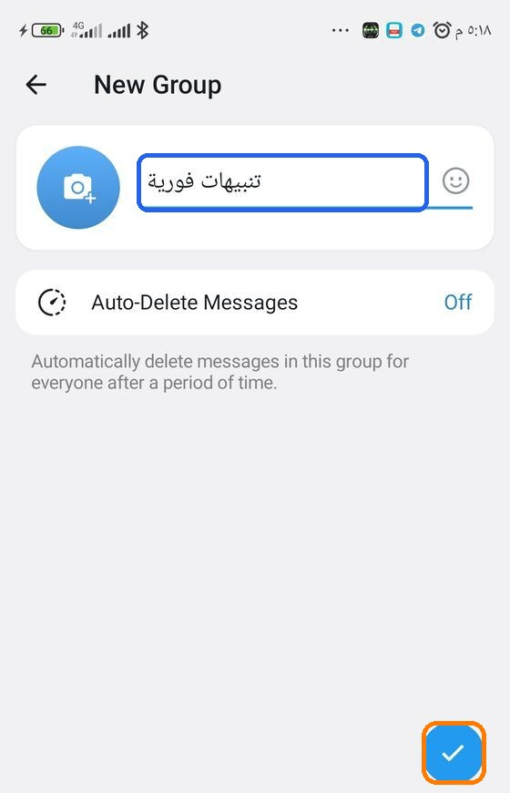
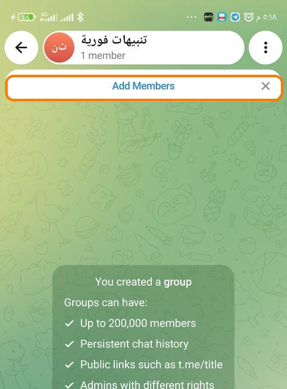
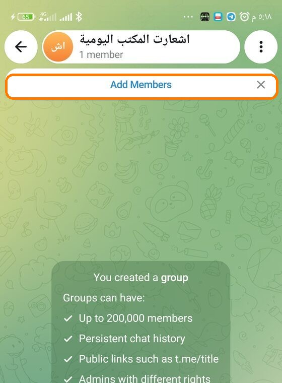
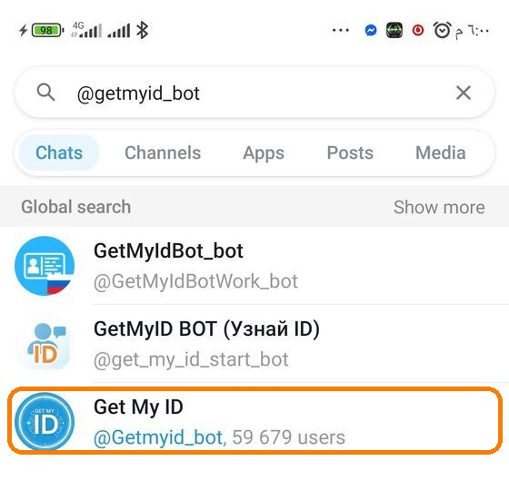
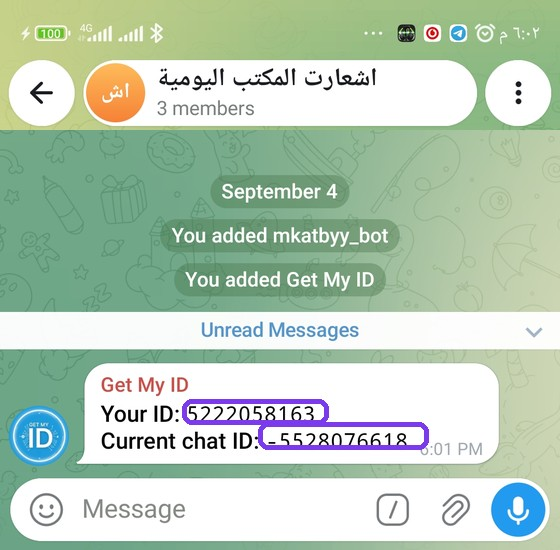

🔒 التوكن ورقم الشات بتاعتك إنت بيانات سرية زي الباسورد بالظبط — متبعتهاش لحد ومتحطهاش في أي مكان عام أو جروب مفتوح. أي حد يعرفهم يقدر يتحكم في البوت بتاعك أو يبعت رسائل باسمك.
1
اعمل "بوت" يبعتلك الإشعارات
البوت = حساب على تليجرام بيبعت رسائل تلقائي، زي أي حساب تتكلم معاه
- افتح تطبيق تليجرام، دوس على أيقونة البحث 🔍 فوق، واكتب BotFather — هيظهرلك حساب رسمي جنبه علامة ✔ زرقاء، ادخل عليه
- دوس زرار Start لو ظهر، وبعدين ابعت الأمر: /newbot
- هيسألك اسم للبوت — اكتب أي اسم يعجبك (اسم عرض بس، ممكن عربي أو إنجليزي)، وابعته
- هيسألك يوزر للبوت — لازم يكون حروف/أرقام إنجليزي وينتهي إجباريًا بكلمة bot (مثلاً Maktaby_bot)، وابعته
- لو اليوزر مقبول، هيبعتلك رسالة فيها سطر طويل هو الـ Bot Token — اعمله نسخ (Copy) واحفظه في مكان آمن، هتحتاجه في خطوة 5

اكتب newbot/ وابعته لـ BotFather

هيسألك عن الاسم، اكتبه وابعته

آخر رسالة فيها الـ Token — 🟣 داخل الإطار البنفسجي (انسخ توكنك إنت من نفس المكان، ده مثال بس)
💡 نفس البوت ده هتستخدمه للمجموعتين اللي هنعملهم بعدين — الخطوة دي مرة واحدة بس ومش هتتكرر.
واحدة تستقبل التذكيرات اليومية، والتانية تستقبل التنبيهات الفورية
- دوس على أيقونة القلم ✏️ أو العلامة ➕ العايمة في تليجرام (غالبًا تحت على يمين الشاشة)، واختار New Group
- تليجرام هيطلب تختار شخص واحد على الأقل — اختار نفسك، أو أي زميل عايز يستقبل الإشعارات، ودوس السهم للتالي
- اكتب اسم للمجموعة، مثلاً "اشعارات المكتب اليومية"، وأكّد الإنشاء ✔
- كرّر نفس الثلاث خطوات دي تاني وسمّي المجموعة الثانية "تنبيهات فورية"

اكتب اسم المجموعة ودوس ✔

المجموعة الأولى "تنبيهات فورية" بعد الإنشاء

المجموعة الثانية "اشعارات المكتب اليومية"
3
ضيف البوت جوّه المجموعتين
كرّر الخطوات دي مرتين — مرة في كل مجموعة
👥
اسم المجموعة ← Add Members
◀
🤖
دوّر على يوزر البوت وضيفه
- افتح المجموعة، دوس على اسمها فوق عشان تدخل على إعداداتها
- دوس Add Members (إضافة أعضاء)
- في خانة البحث، اكتب يوزر البوت اللي عملته في خطوة 1 (اللي خلّص بـ bot)، دوس عليه لما يظهر في النتائج، وأكّد الإضافة
دوّر بيوزر البوت واختاره (علامة ✔ خضرا تأكيد إنه متحدد)
البوت بقى عضو في المجموعة الأولى
وكرّر نفس الخطوة في المجموعة الثانية
مفيش داعي تخليه Admin — إضافته كعضو عادي كافي تمامًا.
4
جيب رقم كل مجموعة (Chat ID)
لازم تجيب رقم مختلف لكل مجموعة على حدة — هو اللي بيحدد لتليجرام يبعت الرسالة فين بالظبط
- ابحث في تليجرام عن بوت اسمه Get My ID (يوزره الرسمي: @Getmyid_bot)
- ضيفه في المجموعة بنفس طريقة خطوة 3 بالظبط (Add Members ← بحث ← اختيار ← تأكيد)
- على طول هيبعت رسالة تلقائية في المجموعة فيها سطرين: "Your ID" و"Current chat ID" — السطر التاني ده هو الـ Chat ID المطلوب
- انسخ رقم "Current chat ID" كامل واحفظه (هيكون فيه علامة سالب في الأول)
- دلوقتي تقدر تشيل بوت Get My ID من المجموعة تاني — مش هتحتاجه بعد كده — من إعدادات المجموعة ← الأعضاء ← دوس عليه ← Remove
🟡 هتلاقي أسماء شبه بعض في نتائج البحث — اختار اللي عليه أكبر عدد يوزرز (Get My ID، حوالي 59 ألف مستخدم)، زي ما موضّح في الصورة.

دوّر باليوزر الصح: Get My ID@ Getmyid_bot
دلوقتي المجموعة فيها البوتين الاتنين

🟣 "Current chat ID" ده هو رقم المجموعة (الرقم في الصورة تجريبي بس — رقمك إنت هيظهر في نفس المكان)
🔴 لازم يفضل فيه علامة سالب (−) في أول الرقم لما تنسخه — ده طبيعي وصحيح، سيبه زي ما هو من غير ما تشيله.
⚠️ كرّر الخطوة دي بالكامل في المجموعة الثانية كمان، عشان تجيب رقمها هي (هيكون رقم مختلف تمامًا عن الأول).
5
حطّ البيانات في حقول التطبيق
دلوقتي معاك توكن واحد ورقمين مختلفين — كل واحد له مكانه الصحيح
🌅 بوت التذكيرات اليومية
Bot Token123456789:ABCdef...
Chat ID-1001111111111
⚡ بوت التنبيهات الفورية
Bot Token (نفسه)123456789:ABCdef...
Chat ID-1002222222222
- الصق نفس التوكن (من خطوة 1) في خانة Bot Token تحت قسم "بوت التذكيرات اليومية"
- الصق نفس التوكن (فعلاً نفسه بالحرف) في خانة Bot Token تحت قسم "بوت التنبيهات الفورية"
- الصق رقم مجموعة "التذكيرات" (من خطوة 4) في خانة Chat ID بتاعة قسم التذكيرات
- الصق رقم مجموعة "التنبيهات" في خانة Chat ID بتاعة قسم التنبيهات
- أخيرًا دوس زرار "💾 حفظ إعدادات التليجرام"